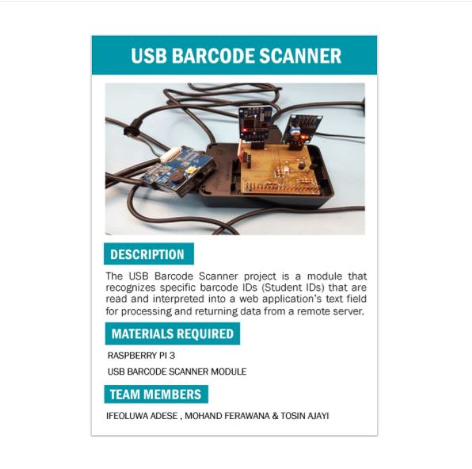
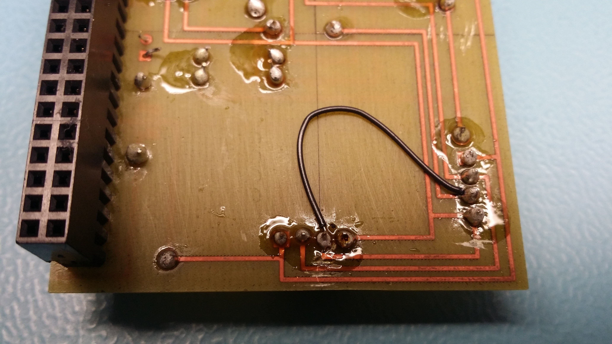
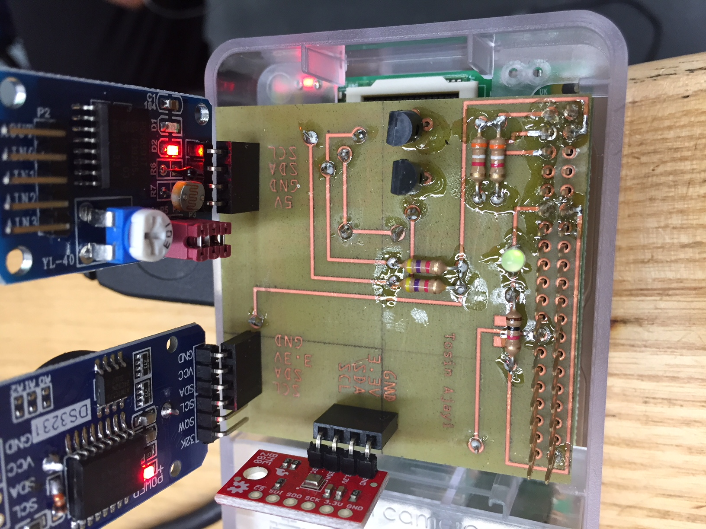
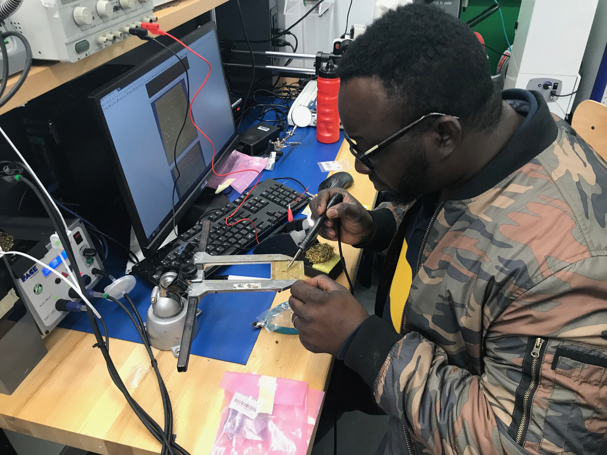
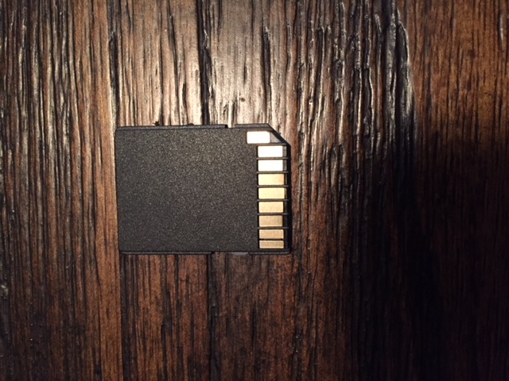
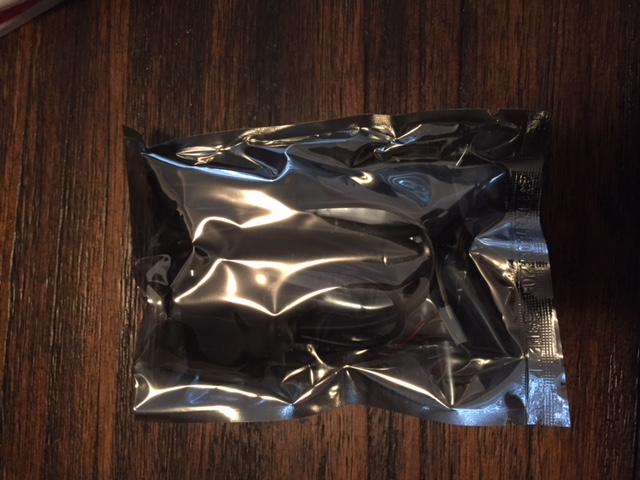
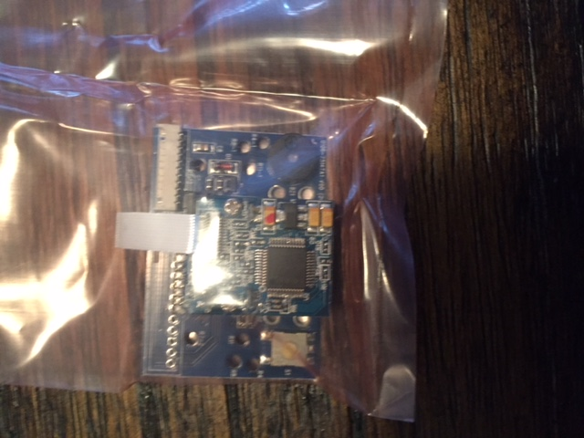
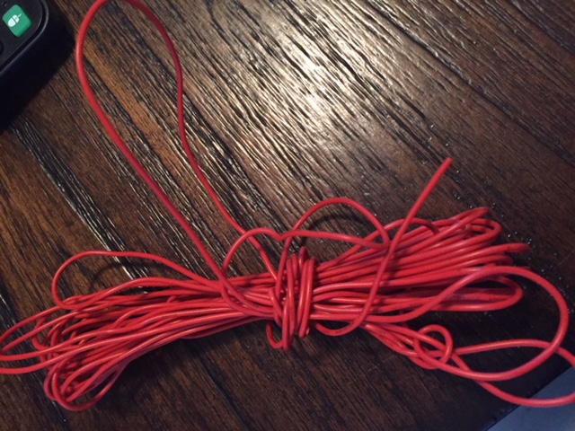
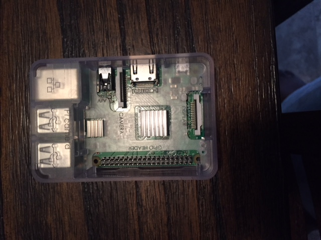
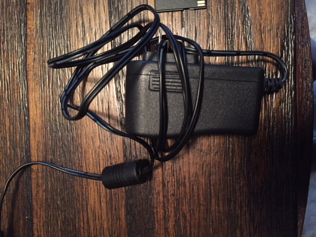

- Build Video by Tosin Ajayi
Week 8 - Group Placard & Video Script (Dec. 11th)
The group placard and video scripts were expected to be due. The group placard is a public display of a brief description of the Parts Crib Database + Non Usb Barcode Scanner project. It also shows the list of hardware materials required for the set up as well as the names of the team members. Below are photos of the group placard as well as a brief outline of our script for the build video expected next week.
My Build Video Script:
Video Script Introduction:
The Start up screen titled "Parts crib Database + Non-Usb Barcode Scanner by my name will follow by brief introduction of the project.
A recent study on how equipment and tools are been borrowed from Part cribs of the engineering department shown that the process is not well organised, and not in line with the new technology. A projection of how students increase per year shown that at some point the manual way of lending this equipment will not be a better option. I therefore want to introduce part cribs database which am focusing more on the hardware Non Usb Barcode scanner. This is a machine-readable strip of data printed in parallel lines, used to represent a multitude of information. Traditionally, the barcode scanner is meant to keep track of inventory and speed up data entry. Due to high volume of student usage, barcode scanning provide easy access, focusing on improving the efficiency, accuracy, and productivity of supply management. In contrast, I want to create an application that is users friendly. This application would function as a reader of barcode of student identity card.
A few seconds of the parts that arrived:
These are the component which will fit together to build the entire project. I odered my parts from two different places. My raspberry pi 3 with its component arrived at the cost of $98.00 from amazone with free shipping, Barcode scanner non usb arrived from Robotshop at the cost of almost $100.00 with shipping cost, I got my sd card from the source. They all arrived one week interver.
A few seconds of the parts assembly:
In other to assemble this part together, we will need some equipments for connection.
After connecting the Raspberry Pi’s power adapter for power up, we can switch views on the computer’s VGA settings till we can see the Raspberry Pi’s power up process during load up. We’ll open up the Pi’s command line terminal and then load up the program files and scripts needed to activate the USB barcode scanner’s functionality. At the moment, all we’re trying to do is ensure that the USB Barcode scanner can successfully scan in printed barcode IDs into a web application’s text field and we already have a web application we can use to demonstrate that. I’ll also briefly run through how our barcode IDs where generated as well as the logic behind the program script used to activate the barcode scanner.
Week 7 - Individual PCB Demo Due (Dec. 4th)
This week, Dr Kristian shared a correction paper to correct some part of the PCB board (Cutting traces). A small wire was cut and soldered on the PCB board from one point to another, the wire bridged the two point on the PCB board. After the process, I was able to test my PCB at the protype lab to ensure that is working.
- Cutting the Trace on my PCB 
- I got the LED to blink using "sudo ./traffic2B"
- I got the light sensor to work using "sudo ./ghmain"
- I got the "sudo hwclock -w" and "sudo hwclock -r" to work
- Blinking led 
Week 6 - Assembling & Soldering (Nov. 27th)
This week (after strike), we simply continued the soldering process for the PCB board, which is expected to be finished and tested by next week, December 4th. I told Dr kristian about my situation that i will need help about my blog before he marked me on it, i also i told him about the mark he gave me on my blog and aquisition, and he said he will work something out for me. Since its very hard to create time to meet with Dr Medri for my blog, i was able to figured it out with the help of my coligues.I sent an email to prototype for my pcb board. I got my pcb board and i started working on it, i used the guide provided. This aspect was a great experience for me.
- Soldering the PCB 
Week 5 - Proof of Components Acquired (Nov 27th)
This week (after strike), our various project-required materials were delivered and checked by the instructor this week. I explained to Dr Medri that i forgot my materials at home and he gave me mark only on my glasses.
- Project Materials      
Week 5 - Progress Report (Reading Days Holiday)
NO classes held this week
Week 4 - Individual Budget Report Due
The Budget Report for the Parts Crib Database project shows the all the infomation on cost for the required hardware materials needed to set up a functional without USB barcode reader to read in linear barcode IDs into our web/mobile application. The main parts required are just the Barcode Scanner Module with CCD Camera and the Raspberry PI 3 model kit which includes other sub parts like the casing, the power adapter, a micro SD card, a micro SD USB reader and a HDMI cable. Below is a detailed display of the budget for each part.
Week 3 - Project Timeline Scheduling (Gantt Chart)
This week we submitted our Project Scheduling Report in a Gantt Chart format using Microsoft Project. The project Schedule outlines the tasks and activities of the project; the duration; start and end dates for each individual task and the project as a whole; and the resources and effort required. Developing a project Schedule involves a number of defined steps.
Week 2 - Project Proposal Submission
The Proposal letter was submitted for an aproval. The proposal explained more on the project topic & background and most importantly the problem addressed and how to solve it. components. The main objective of this proposal is to give a clear overview of listing of a project's milestones, activities, and deliverables, usually with intended start and finish.
Week 1 - Github Installation and Repository Set Up
The first day of the week we started with a quize, installation and set up for our Github repositories. We created online repositories, cloned into our Github Desktop application which then downloads our data to the PC drive/external drive based on a selected location. This synchronized method of data storage between our device and the Github cloud repositories (Online) makes the modification of our project related materials much more easier. We also set up individual web pages based on a certain web template given to us by the instructor, in order to upload records of our weekly progress for our selected project.